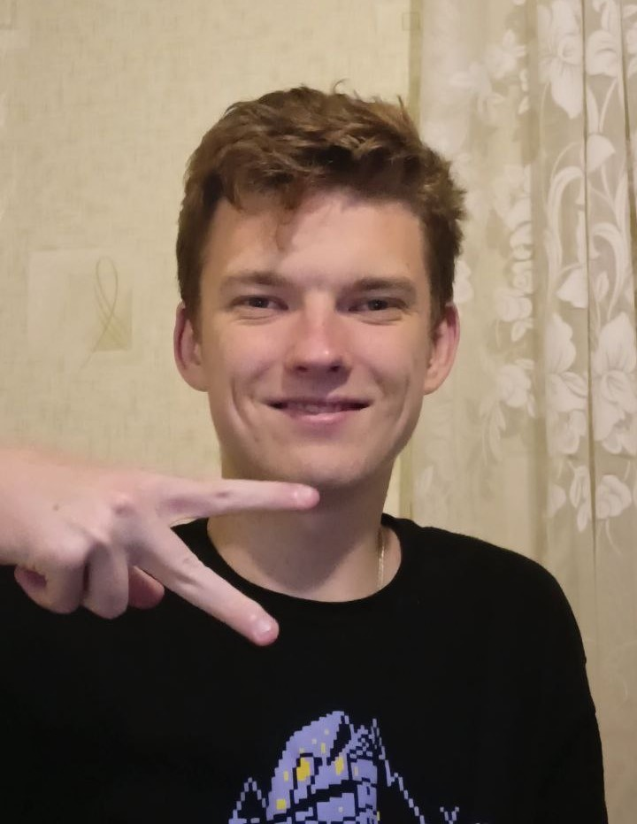
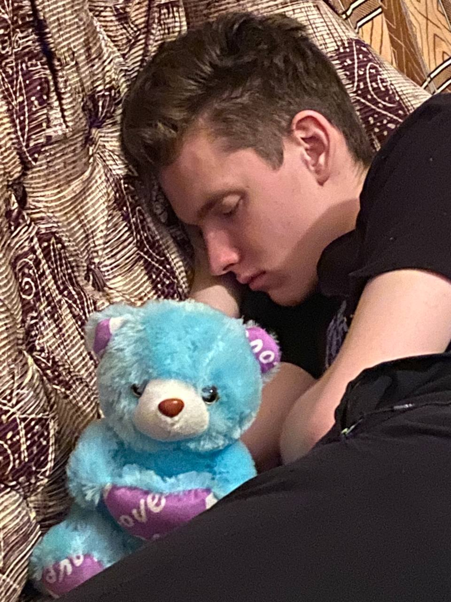

Сайт Ванечки

Меня зовут Ванюша и я напрограмистил этот сайт, который расскажет обо мне.

Я родился и вырос в городе Рыбница. Окончил школу №6, на данный момент обучаюсь в Рыбницком филиале Приднестровского государственного университета имени Тараса Григориевича Шевченко, на 1 курсе Программной инженерии. Увлекаюсь безделием, отдыхом и ничего не деланием.

Но в перерывах между отдыхом я люблю позалипать в игры, особенно мне нравится когда другие игроки проигрывают внутриигровую валюту мне за столом в покер.
Также я люблю пить пиво, но вы это не увидете ибо пивом не делюсь, сам давно не пил